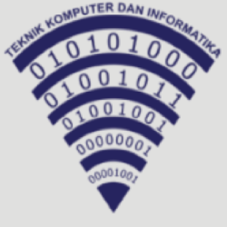

JURUSAN-JURUSAN DI SKMN 1 SUBANG
Di SMKN 1 SUBANG terdapat 10 jurusan

RPL
TKJ
TBSM
TL
DKV
AKL
OTKP
BDP

KULINER

We are the first, and our commitment is your satisfaction
Kunjingi kami untuk tahu lebih lanjut“C E R E N model” adalah singkatan dari :Character building, Entrepreneurship, Responsive, Excellent of Competency, Nature
Program sekolah untuk membentuk karakter peserta didik yang agamis melalui program Islamic School Culture, membentuk karakter peserta didik yang kuat fisik dan Tangguh melalui program bela negara dan untuk membentuk karakter bekerja sama ataubergotong royong dilaksanakan dengan program kebersamaan.
Program unit produksi pada masing-masing program keahlian, optimalisasi mimake dengan konsep SMK Masuk Desa, penciptaan berbagai peluang dengan konsep Start Up Bisnis.
Program Smart School dengan konsep “One for All”, digitalisasi seluruh program yang dilaksakan sekolah, terbiasa merancang teknologi terbarukan yang dibutuhkan masyarakat luas.
Program kelas industry untuk setiap kompetensi keahlian, pelaksanaan pembelajaran dengan sistem Teaching Factory, Sinkronisasi kurikulum industry dan program pencapaian kluster SMK Negeri 1 Subangmenajdi kluster industry pada tahun 2024.
Program kegiatan sekolah berbasis Greeen School yang bertitik berat terhadap penghijauan dan pelestarian lingkungan.
Di SMKN 1 SUBANG terdapat 10 jurusan
Berikut ini adalah beberapa prestasi prestasi yang telah diraih oleh SMKN 1 SUBANG dan masih banyak yang lainnya